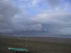
La nuit de vendredi à Saint-Brévin avait été chaude : à 6 h du matin, encore Force 6 et des déluges ! Mais à 9 h, c'était supportable : Force 2, encore des grains à l'horizon et des gouttes par-ci par-là.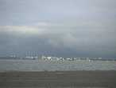
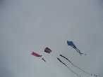
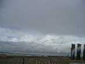
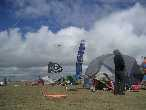
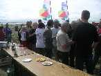
L'après-midi va être très belle, et ce sera une grande journée de cerf-volant, avec un vent lisse soufflant de la mer Force 3 à 4 et bien régulier.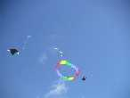
Des bannières multiples et complémentaires déploient leur arc-en-ciel...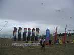
...tandis que celles des locaux, les Eoliens, balisent l'accueil...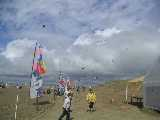
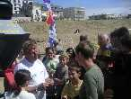
Jean-Claude a monté ses moulins et donne une leçon générale et très suivie de découpage artistique de bouteilles. Mais il ne dit pas tout : la théorie ne suffit pas, il faut avoir d'abord en amont fabriqué ou arrangé ses propres outils ; ensuite pour découper il faut l'oeil et le coup de main pour faire du travail régulier et propre ; mais surtout le sens artistique est indispensable pour ne pas faire sac poubelle à emballages...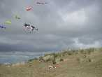
Le ciel est si beau : même des sirènes viennent contempler les oeuvres d'art au dessus de leur tête !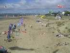
Enfin je réussis grâce à un dispositif complexe ma première photo aérienne présentable...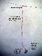
La nacelle, le crochet pour la ligne, la bielle de suspension semi-rigide absorbant les vibrations, et le dispositif de rotation sont constitués d'un fil de cuivre (section 2,5 mm2) revêtu de plastique pour éviter l'oxydation et assurer la sécurité en cas de bris du fil de cuivre, le tout judicieusement plié.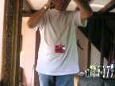
L'appareil, monté dans la nacelle, peut-être orienté dans toutes les directions. La photo est prise en utilisant le retardateur ! La durée de celui-ci est chez moi de 10 secondes, ce qui ne permet pas de monter bien haut. De plus j'ai l'impression que la mise au point se fait au moment du déclenchement (à confirmer), donc il faut viser loin et à peu près dans la bonne direction pour l'éclairage à cet instant !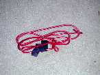
L'avantage est l'extrême compacité et la solidité de l'ensemble une fois replié, ce qui permet le transport en vrac dans le fond du sac, là où le sable se rassemble (ou plutôt se rassemblait avant qu'un orifice de vidange ne se crée à force de traîner le sac sur toutes les plages)... Je recommande quand même de le mettre dans un sac car si une ficelle traîne à proximité, il se jette dessus de suite comme un anaconda mâle sur un anaconda du sexe opposé.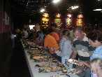
Le soir, rassemblement à la Salle de l'Etoile et ses blasons armoriés pour un dîner-buffet.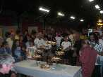
La photo de groupe réunit les participants devant les gâteaux pour ouvrir les appétits.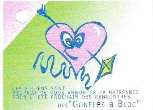
La future manif est baptisée (on a eu les dragées) "Gonflés à bloc", peut-être pour faire plus ado et attirer les jeunes, quoique l'expression soit déjà très archéo (au moins). Bon, on gonflera les cerfs-volants...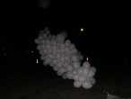
Le terrain était décoré de ballons, des gros, des petits, seuls ou en grappe.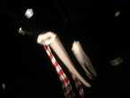
De grands cerfs-volants étaient de sortie, dont celui-ci vraiment énorme et très beau, bien que la photo ne lui rende guère hommage (faudrait un pied et que le machin ne bouge pas, et que je ne tienne pas mon Albatros dans la main gauche...).